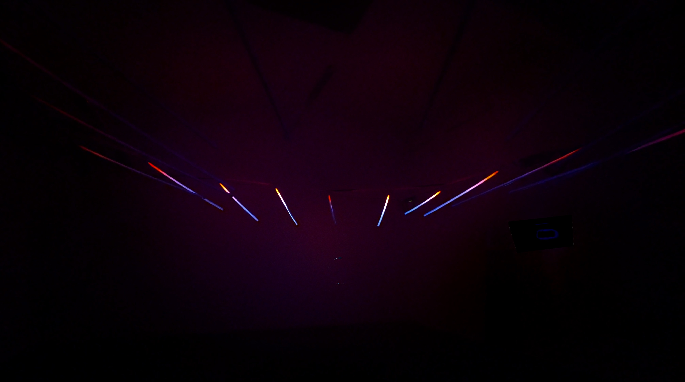

Countersun - Immersive audio-visual artwork
2026
Artist
An audiovisual artwork that immerses the viewer in the yearly solar cycle, within hours.
Visualising the transit of the Sun at a specific point in space over the entire year.

Mercury Maze Studio, a collective comprised of myself, Katerina Blahutova and Þorsteinn Eyfjörð, were invited to take over Listasalur Mosfellsbæjar for a month, during the darkest January days of the Icelandic winter.
The installation reflects on the coming year, 2026, through one of the few constants we can reliably depend on: that the Sun will rise and set at specific times each day. Even when obscured by clouds, the presence—or absence—of the Sun profoundly influences human emotion, behavior, and survival itself.

Comprised of 18 custom-built LED poles, a soundscape created using solar wind recordings, and a mossy, natural resting place in the center, we transformed the gallery space into a contemplative, time-travelling experience where the passage of days, seasons, light and dark are shifted more towards that of breathing.

- By Mercury Maze Studio : Instagram
-
Founded by :
Katerina Blahutova
Þorsteinn Eyfjörð
Owen Hindley
- Exhibited at Listasalur Mosfellsbæjar: Listasalur